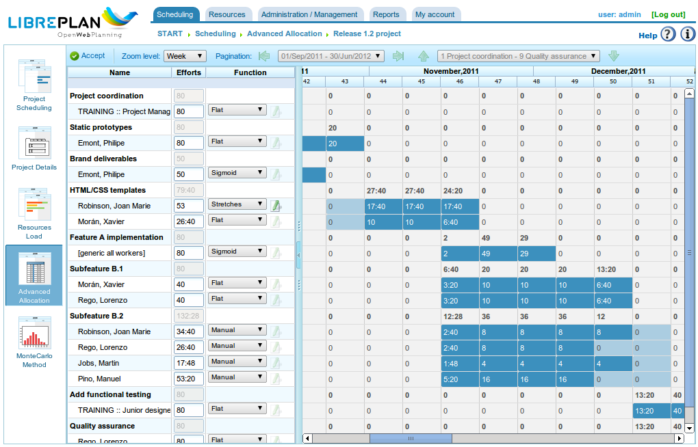

Ressourcenzuweisung
Contents
Die Ressourcenzuweisung ist eine der wichtigsten Funktionen des Programms und kann auf zwei verschiedene Arten durchgeführt werden:
- Spezifische Zuweisung
- Generische Zuweisung
Beide Arten der Zuweisung werden in den folgenden Abschnitten erläutert.
Für beide Arten der Ressourcenzuweisung sind folgende Schritte erforderlich:
- Gehen Sie zur Planungsansicht eines Projekts.
- Klicken Sie mit der rechten Maustaste auf die zu planende Aufgabe.

Menü für Ressourcenzuweisung
- Das Programm zeigt einen Bildschirm mit den folgenden Informationen an:
- Liste der zu erfüllenden Kriterien: Für jede Stundengruppe wird eine Liste der erforderlichen Kriterien angezeigt.
- Aufgabeninformation: Das Start- und Enddatum der Aufgabe.
- Berechnungstyp: Das System ermöglicht es Benutzern, die Strategie zur Berechnung der Zuweisungen zu wählen:
- Stundenanzahl berechnen: Berechnet die Anzahl der Stunden, die von den zugewiesenen Ressourcen benötigt werden, bei gegebenem Enddatum und einer Anzahl von Ressourcen pro Tag.
- Enddatum berechnen: Berechnet das Enddatum der Aufgabe basierend auf der Anzahl der der Aufgabe zugewiesenen Ressourcen und der Gesamtstundenzahl, die für die Aufgabe erforderlich ist.
- Anzahl der Ressourcen berechnen: Berechnet die Anzahl der Ressourcen, die benötigt werden, um die Aufgabe bis zu einem bestimmten Datum abzuschließen.
- Empfohlene Zuweisung: Diese Option ermöglicht es dem Programm, die zu erfüllenden Kriterien und die Gesamtstundenzahl aus allen Stundengruppen zu sammeln und dann eine generische Zuweisung zu empfehlen.
- Zuweisungen: Eine Liste der vorgenommenen Zuweisungen.

Ressourcenzuweisung
- Benutzer wählen „Ressourcen suchen".
- Das Programm zeigt einen neuen Bildschirm mit einem Kriteriensbaum und einer Liste von Mitarbeitern, die die ausgewählten Kriterien erfüllen, auf der rechten Seite an:

Ressourcenzuweisungssuche
- Benutzer können auswählen:
- Spezifische Zuweisung: Weitere Einzelheiten zu dieser Option finden Sie im Abschnitt „Spezifische Zuweisung".
- Generische Zuweisung: Weitere Einzelheiten zu dieser Option finden Sie im Abschnitt „Generische Zuweisung".
- Benutzer wählen eine Liste von Kriterien (generisch) oder eine Liste von Mitarbeitern (spezifisch). Mehrfachauswahlen können durch Drücken der Taste „Strg" während des Klickens auf jeden Mitarbeiter/jedes Kriterium vorgenommen werden.
- Benutzer klicken dann auf die Schaltfläche „Auswählen".
- Das Programm zeigt die ausgewählten Kriterien oder die Ressourcenliste in der Zuweisungsliste auf dem ursprünglichen Ressourcenzuweisungsbildschirm an.
- Benutzer müssen je nach der im Programm verwendeten Zuweisungsmethode die Stunden oder Ressourcen pro Tag wählen.
Spezifische Zuweisung
Dies ist die spezifische Zuweisung einer Ressource zu einer Projektaufgabe. Mit anderen Worten: Der Benutzer entscheidet, welcher spezifische Mitarbeiter (nach Name und Nachname) oder welche Maschine einer Aufgabe zugewiesen werden muss.

Spezifische Ressourcenzuweisung
Wenn eine Ressource spezifisch zugewiesen wird, erstellt das Programm tägliche Zuweisungen basierend auf dem ausgewählten Prozentsatz der täglich zugewiesenen Ressourcen nach Vergleich mit dem verfügbaren Ressourcenkalender.
Spezifische Maschinenzuweisung
Die spezifische Maschinenzuweisung funktioniert genauso wie die Mitarbeiterzuweisung. Wenn eine Maschine einer Aufgabe zugewiesen wird, speichert das System eine spezifische Zuweisung von Stunden für die gewählte Maschine.
Generische Zuweisung
Generische Zuweisung erfolgt, wenn Benutzer Ressourcen nicht spezifisch wählen, sondern die Entscheidung dem Programm überlassen, das die Lasten auf die verfügbaren Ressourcen des Unternehmens verteilt.

Generische Ressourcenzuweisung
Das Zuweisungssystem verwendet folgende Annahmen als Grundlage:
- Aufgaben haben Kriterien, die von Ressourcen erfüllt werden müssen.
- Ressourcen sind so konfiguriert, dass sie Kriterien erfüllen.
Der Algorithmus für die generische Zuweisung funktioniert wie folgt:
- Alle Ressourcen und Tage werden als Container behandelt, in denen tägliche Stundenverteilungen passen.
- Das System sucht nach den Ressourcen, die das Kriterium erfüllen.
- Das System analysiert, welche Zuweisungen derzeit verschiedene Ressourcen haben, die Kriterien erfüllen.
- Die Ressourcen, die die Kriterien erfüllen, werden aus denen ausgewählt, die ausreichende Verfügbarkeit haben.
- Wenn freierer Ressourcen nicht verfügbar sind, werden Zuweisungen für die Ressourcen mit weniger Verfügbarkeit vorgenommen.
- Eine Überverteilung von Ressourcen beginnt erst, wenn alle Ressourcen, die die jeweiligen Kriterien erfüllen, zu 100 % zugewiesen sind.
Generische Maschinenzuweisung
Die generische Maschinenzuweisung funktioniert genauso wie die Mitarbeiterzuweisung. Für alle für die generische Zuweisung ausgewählten Maschinen:
- Sammelt es die Konfigurationsinformationen der Maschine: Alpha-Wert, zugewiesene Mitarbeiter und Kriterien.
- Wenn die Maschine eine Liste zugewiesener Mitarbeiter hat, wählt das Programm die von der Maschine benötigte Anzahl aus.
- Wenn die Maschine ein oder mehrere zugewiesene Kriterien hat, erstellt das Programm generische Zuweisungen aus den Ressourcen, die die der Maschine zugewiesenen Kriterien erfüllen.
Erweiterte Zuweisung
Erweiterte Zuweisungen ermöglichen es Benutzern, Zuweisungen zu entwerfen, die automatisch von der Anwendung ausgeführt werden, um sie zu personalisieren. Dieses Verfahren ermöglicht es Benutzern, manuell die täglichen Stunden zu wählen, die Ressourcen für zugewiesene Aufgaben aufwenden, oder eine Funktion zu definieren, die auf die Zuweisung angewendet wird.
Die zu befolgenden Schritte zur Verwaltung erweiterter Zuweisungen sind:
- Gehen Sie zum Fenster für erweiterte Zuweisungen. Es gibt zwei Möglichkeiten, auf erweiterte Zuweisungen zuzugreifen:
- Gehen Sie zu einem bestimmten Projekt und ändern Sie die Ansicht auf die erweiterte Zuweisung.
- Gehen Sie zum Fenster für Ressourcenzuweisungen, indem Sie auf die Schaltfläche „Erweiterte Zuweisung" klicken.

Erweiterte Ressourcenzuweisung
- Benutzer können die gewünschte Zoomstufe wählen:
- Zoomstufen größer als ein Tag: Wenn Benutzer den zugewiesenen Stundenwert auf eine Woche, einen Monat, vier Monate oder sechs Monate ändern, verteilt das System die Stunden linear auf alle Tage des gewählten Zeitraums.
- Täglicher Zoom: Wenn Benutzer den zugewiesenen Stundenwert auf einen Tag ändern, gelten diese Stunden nur für diesen Tag.
- Benutzer können wählen, eine erweiterte Zuweisungsfunktion zu entwerfen. Dazu müssen Benutzer:
- Die Funktion aus der Auswahlliste neben jeder Ressource wählen und auf „Konfigurieren" klicken.
- Das System zeigt ein neues Fenster an, wenn die gewählte Funktion spezifisch konfiguriert werden muss. Unterstützte Funktionen:
- Segmente: Eine Funktion, die es Benutzern ermöglicht, Segmente zu definieren, auf die eine polynomielle Funktion angewendet wird.
- Benutzer klicken dann auf „Akzeptieren".
- Das Programm speichert die Funktion und wendet sie auf die täglichen Ressourcenzuweisungen an.

Konfiguration der Segmentfunktion